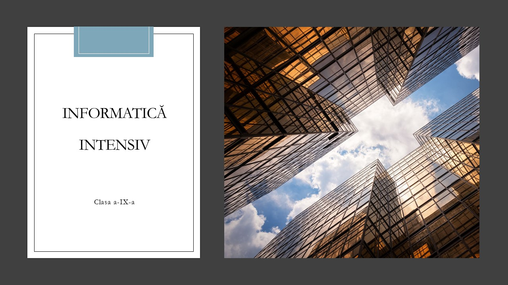

Ce vom învăța?

Despre Algoritmi:
- Cum putem crea un algoritm în pseudocod
- Să prelucrăm secvențe numerice
- Uitându-ne la o secvență de date să verificăm proprietățile sale
Să lucrăm în limbajul C++:
- În mediul de programare Codeblocks
- Să transformăm pseudocodu-l în limbajul de programare C++
- Utilizând funcțiile recursive și liniare să navigăm diferite structuri de date
- Să ne utilizăm de fișiere text pentru a stoca și încărca date